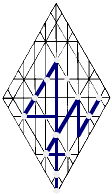

Earth - Land - Territory
xra
|  |
earth (ehrets) a location/a governed/r by righteousness/x; lattitude, area/a for individual/r sacrifice unto transformation, metamorphosis x; an expansive area/a watched over r by heavenly hosts x. Gematria, 291
a xr: sworn to righteous seed. See Arza/axra. |
|
|
These are old pages that aren't integrated into this version of the website, at present. You can return to the sitemap or to the book menu from here, but all other links take you to places from which you'll have to find your way. Be ready with that go-back button.